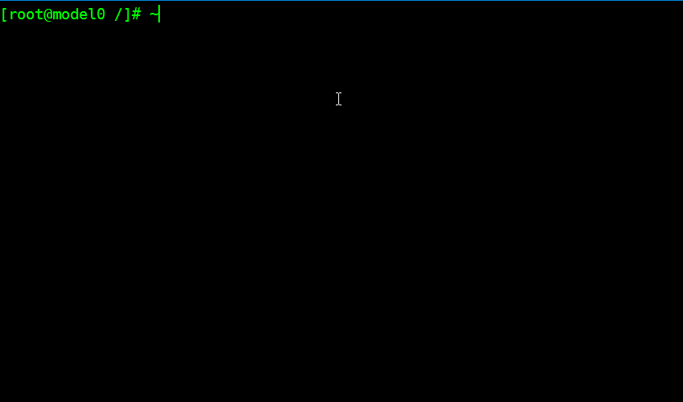

Ansible的入门实践
Ansible的入门实践
测试环境
安装步骤
这里使用yum安装，但是必须先要替换yum源。
首先修改yum源
yum install yum install http://mirrors.sohu.com/fedora-epel/6/x86_64/epel-release-6-8.noarch.
直接执行yum安装Absible
yum install Ansible -y
安装完成后检查一下：
rpm -qa|grep "ansible"
Ansible的配置管理
修改/etc/ansible/hosts文件
vim /etc/ansible/hosts
[webservers]
alpha.example.org
beta.example.org
192.168.1.100
192.168.1.110
将需要管理的主机地址添加进去
sed -i '24a 10.0.0.170' /etc/ansible/hosts
sed -n '25p' /etc/ansible/hosts
在管理机上生成ssh密钥
免交互生成ssh密钥对
echo -e "\n"|ssh-keygen -t dsa -N ""
将生成的密钥对的公钥通过scp分发到所有被管理机器上。
ssh-copy-id -i ~/.ssh/id_rsa.pub root@10.0.0.170
如果修改了ssh的默认端口号则执行
ssh-copy-id -i ~/.ssh/id_dsa.pub “-p 52113 seventeen@10.0.0.170”
Ansible的测试
安装完成后简单的进行测试

Ansible的配置文件
Ansible 可同时操作属于一个组的多台主机,组和主机之间的关系通过 inventory 文件配置. 默认的文件路径为 /etc/ansible/hosts
Ansibile主机与组
[webserver]
10.0.0.172
[nfs]
10.0.0.173
[base]
10.0.0.172
10.0.0.173
方括号[]中是组名，可以用于对系统的分类，一台主机可以属于不同的组，同一台服务器既可以属于
webserver组也可以属于nfs组。属于这两个组的变量可以同时为这两个组使用，如果主机修改了ssh的默认端口号22，而是52113，那么可以明确的表示使用哪个端口进行连接
[webserver]
10.0.0.172:52113
还可以指定通过什么连接，使用什么用户登录；
[targets]
10.0.0.173 ansible_connection=ssh ansible_ssh_user=seven
如果主机的名称相似可以设置为：
[webserver]
10.0.0.17[2..3] #在数字的简写模式可以定义这个范围
com.web[a..z] #可以定义字母